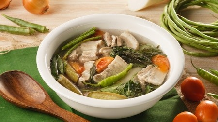
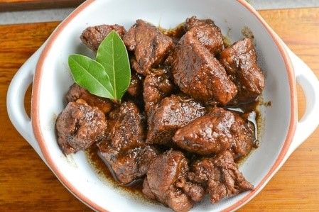
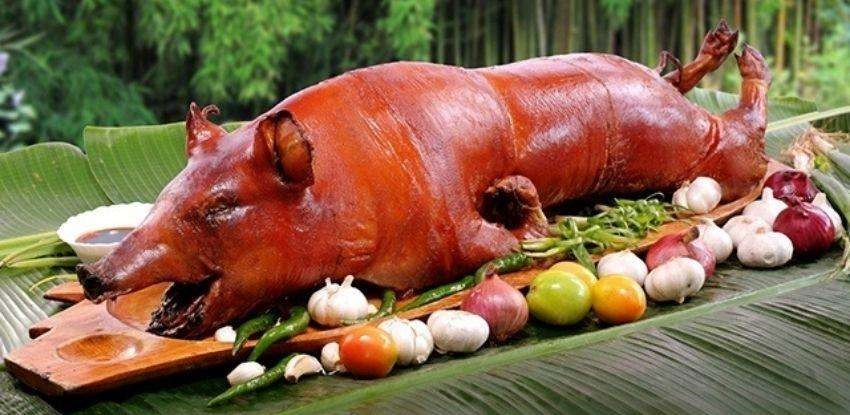
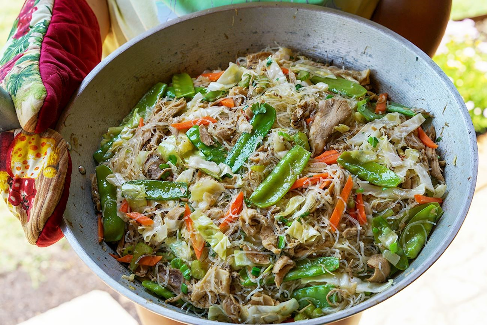
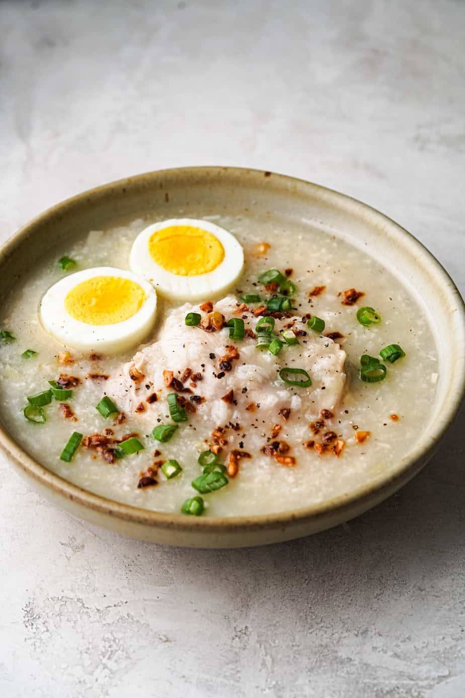
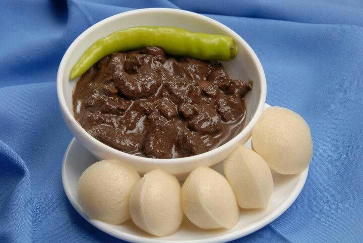
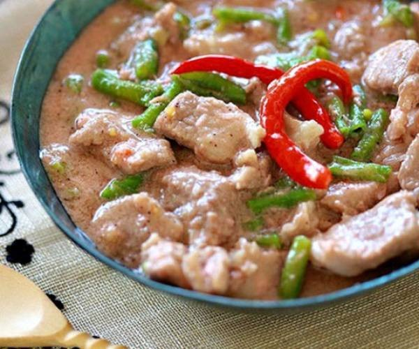

Filipino Food/Cuisine
Filipino dishes that compose Filipino cuisine are from the food traditions of various ethnolinguistic groups and tribes of the archipelago, including the Ilocano, Pangasinan, Kapampangan, Tagalog, Bicolano, Visayan (Cebuano, Hiligaynon and Waray), Chavacano and Maranao ethnolinguistic groups.(Filipino Cuisine - Wikipedia, n.d.)
Sinigang
Sinigang is another popular and important dish in Filipino cuisine. It refers to a type of soup or stew characterized by its sour and savory flavors. It’s usually tamarind-based though other acidic Filipino fruits can be used as souring agents like batuan, guava, kamias, and santol.
Sinigang is usually made with different vegetables and some type of meat or seafood like pork, beef, shrimp, or fish. There are many versions of sinigang and their names are usually derived from the main ingredients used in the dish. Some of the most popular types of sinigang include sinigang na isda (fish), sinigang na baboy (pork), and sinigang na hipon (shrimp). (Filipino Food: 45 of the Best-Tasting Dishes | Will Fly for Food, n.d.)
Adobo
Adobo is one of the most well-known Filipino foods. It’s often regarded as a Filipino national dish. Like sinigang, the word adobo can be used to refer to both the dish and the cooking method. It’s typically made with chicken and pork that are left to simmer over low heat until they break down and become fork-tender in a thick, flavorful sauce.
Though chicken and pork adobo are the most common, there are many versions of the dish. Depending on what they’re made with, they can be served as a main dish with rice or as a side dish. (Filipino Food: 45 of the Best-Tasting Dishes | Will Fly for Food, n.d.) Listed below are some of the most popular types of adobos in the Philippines.
• Chicken and Pork Adobo
• Adobong Pusit
• Adobong Kangkong
• Adobong Puti
Lechon
Lechon, derived from a Spanish word for roasted suckling pig is one of the most popular dishes in the Philippines. The slowly-roasted suckling pig is usually stuffed with lemongrass, tamarind, garlic, onions, and chives, and is then roasted on a large bamboo spit over an open fire.
It is traditionally served whole on a platter, at celebrations and festive events such as weddings and Christmas. Once the meat is properly roasted and falls off the bone, people tend to eat every part of the pig, and the crispy, reddish-brown, crackling skin is especially beloved. ( https://www.tasteatlas.com/lechon)
Pancit
Pancit is a staple Filipino dish found at numerous feasts and celebrations, consisting of stir-fried noodles with meat and vegetables such as chicken, pork, shrimp, celery, carrots, onions, garlic, and cabbage. The dish has Chinese origins, and the name of the dish is derived from the Hokkien phrase pian i sit, meaning something convenient, cooked fast. (https://www.tasteatlas.com/pancit)
Arrozcaldo
While chicken soup soothes sick Westerners, Filipinos turn to arroz caldo, a thick chicken rice porridge. Cooked with ginger and sometimes garnished with a hard-boiled egg, toasted garlic and green onions, this Filipino food is sold in street-side stalls.
Dinuguan at Puto
It may not look appetizing.
But this black dish of pork and pig innards -- stewed in fresh pig blood seasoned with garlic, onion and oregano and eaten with a white puto (rice cake) or steamed rice -- is a comforting dish for many Filipinos.
Bicol Express
A fitting tribute to people who love coconut and spicy food is bicol express, a fiery chili, pork and coconut milk stew. The mild sweetness of coconut milk brings a sense of delight to the sharp notes of chili pepper and bagoong in the classic Bicol Express recipe. This contrast has long created a spell-binding richness in taste for the dish. And this has helped make it arguably one of the most popular Filipino dishes.
Reference:
Filipino cuisine - Wikipedia. (n.d.). Retrieved December 1, 2022, from https://en.wikipedia.org/wiki/Filipino_cuisine
Filipino Food: 45 of the Best-Tasting Dishes | Will Fly for Food. (n.d.). Retrieved December 1, 2022, from https://www.willflyforfood.net/food-in-the-philippines/
https://edition.cnn.com/travel/article/50-delicious-philippines-dishes/index.html